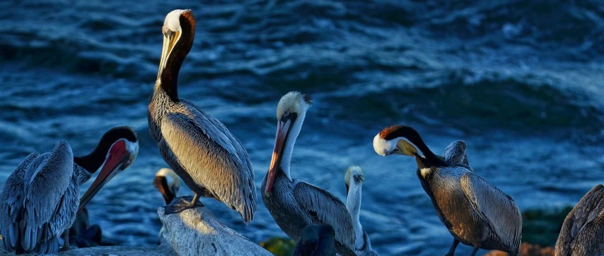

废物，又跪了~
最近黄金价格下跌了，创下两个月新低。
黄金最近两年的价格一直在涨，我没买，怕追高被挂东南枝，结果它一路上涨。
接下去，我也不会买。不过黄金的需求毕竟摆在那，等跌多了，有需要的人是可以捞点。
美联储12月降息25个基点的概率下降。
美国10月PPI同比上升2.4% 高于市场预期的2.3%；10月核心PPI同比上升3.1%，高于市场预期的3%
一般来说，通胀数据越高，降息的可能性越低，因此，降息25个基点的概率从80%下滑到76%，嗯，但我觉得还是会降息25个基点，趋势在那摆着。
老有读者问我为啥不买大A？
说过了，我不在粪坑里捡豆子。好不容易趁着九月底十月初的拉升顺利跑出粪坑，回头一看，我媳妇那个九年没操作的账户还在里面血亏，怎么可能再去碰嘛。
再说个有意思的，过去16年，我们的GDP涨了505%，但如果你买大A最大的股指沪深300股指，嗯，得血亏三分一本金。
但如果买美股，同样的时间，GDP增长了75%，标普500上涨400%，你说我选哪个？
肯定选美股嘛，我要挑战一下自己的软肋，活在即将暴跌和泡沫的恐惧中，嗯，就是这样的，信不信由你。
不信你看看最近一片“牛来了”的大A。
废物，又跪了。
大饼（BTC）的价格目前8.7万美元，昨天9.3万美元。
最近在8.8-9.3之间来回震荡，很多人被爆仓。这个价格段，就不要上合约（杠杆）了，随便一个震荡都能把你震出血亏。
真要拿的话，就拿现货。我是都清空了，只剩1枚留着观察市场走势。
没有大饼，我就持有一点MSTR来替代，这股和大饼走势比较一致，也是妖，震荡得厉害。
开盘时，大饼9万美刀的价格，它就涨到348美元，收盘前跌到327，因为大饼跌到8.7。
一般碰这类股要很慎重，我是买点类似于玩玩的心态，做个观察的。
特斯拉大跌5.77%，来到了311美元，盘后价还在跌，307美元。
不要轻易去追高，很容易被套，特别是特斯拉这类比较妖，由市场情绪推高的股。
它是美股七巨头中最妖的，专业投资机构在做它的时候，往往需要上对冲手段，做多的同时下空单，做空的同时下多单。
机构都不太能搞得定，你还想自己一光棍就赤膊上阵大干一场？往往只能被干。
后续等川普正式上台，特斯拉还能被一顿热炒，向来如此，没有例外。
AMD跌到138美元，还没有达到我设置加仓的价格。
我设置了135、130和125的加仓价格。一般来说，我会比较习惯设置5-10美元的价格差去作为下跌时的买入价格，如果是暴跌时，往往会以10-20美元价差做买入价。
这样不会密集拥趸在一块，能有效拉低成本。
再一个是卖出，一般会提前设置好卖出价格，达到预期后（最少账面浮盈30%+），开始卖出5%，以降低成本。
而后随着价格上涨，账面浮盈40%、50%……再分批次按5%卖出。正常账面浮盈50%时，会卖出总仓位的20%，也就是4个5%
这样一来，成本会低很多，空间撑大了，后续能心态平和地面对涨跌。
投资很多时候是反人性的，成本高，面对市场涨跌，都容易拿不住，跌了想抛，涨了也想抛。
所以这也是为什么我一观察好，确认后就短时间内买成重仓，然后逐步减仓，做成低成本或负成本的原因，这样才能拿得住。
比如英伟达，去年初一开始买了2万股，确定后，不到一个月时间，就买了40万股。
后来随着股票上涨，我在300多美元就卖了5%，400多卖了5%，500-900多，分6次，共卖了30%，1200左右又卖了5%
同时，在这个快速上涨期过后，第一时间卸掉杠杆，高位了容易震荡，导致意外亏损，和大饼的操作一致。
还剩55%，今年英伟达拆股，一拆10，我今年又卖了一点点。拆股后很少卖了。
在英伟达跌到93美元时，我还捞了一把。
现在英伟达负成本，别说它跌10%了，就是跌到50美元，我都没压力，也就是涨跌无所谓。
因此，能稳坐钓鱼台，心态平和地面对市场涨跌，有暴跌就捞一把。英伟达一年内我没打算再卖了。
台积电中旬买入后，目前也在这个操作过程中，卖了30%，还剩70%，成本降低到了79+美元。
现在应对下跌没有任何压力，跌多了，还可以出手捞一把，但由于我成本低，能让我出手捞的价格，也会相对比较低。
美股其他的没有任何操作，波动也小，就不说了。
很多读者希望我将家庭账户里持有的股票也拿来说说，这个可以考虑，因为几个账户都是我在操作，主要集中在科技、消费、生物制药三个板块。
我很少写其他的，只专注于自己有操作的股票，人的精力是有限的，不可能什么都涉及，能操作好自己手头有的，就已经很了不起。
要学会做减法，集中注意力。广了就泛了，泛了就不精了。什么都想赚，最后往往什么都赚不到。
这些年，我一直在做减法。
随着我写孩子的教育，会发现一个问题，就是读者中经常会咨询，该怎么应对校园暴力、霸凌。
这方面你们可能没啥经验，身边人经历过，效果挺好的，写写供参考。
亲戚的小孩上初一，校园被打掉了门牙，去学校，老师和校领导都在做和事佬，和稀泥、打太极；她又想给孩子做后盾，要个说法。
所以她让我帮她看看该怎么办。问了一位律师朋友，很多东西是通行的，得知教育局是扫黑除恶成员单位之一。
那么就简单了，教育方面能涉及扫黑除恶的，不就只有校园霸凌一项。
于是，让她直接去教育局，直接问哪个科室分管“扫黑除恶”，直奔这个科室去。
去反映校园欺凌，揪住别放，要求给出具处理意见。
只要教育局按扫黑除恶校园欺凌去办，学校会反过来去求你，咱们就化被动为主动。
教育局不给具体处理？那么，再去政法委，政法委主管扫黑除恶，有专门的办公室。
政法委要听说保护伞在教育局，那政法委这一季度的扫黑除恶KPI有保障了。
很多时候，大众维权难，是因为不懂规则，不懂规则就无法利用规则，只能在迷宫里瞎转，急得满头大汗。
多研究规则，懂规则，利用规则。万物不归我所有，但万物皆可为我所用。
就这样吧。